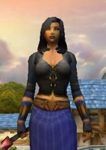
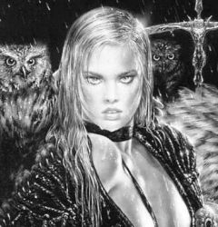

Récits Légendes de Kirin Tor Personnages Célébrités Guildes
Outils Calendrier Calendrier Illustré Mod d'interface
Informations Historiens FAQ Liens Crédits
Les légendes de Kirin Tor
==> Afficher les personnages de Scheena
Scheena
 Age : 26
Age : 26
Sexe : Femme
Race : Humain
Faction : Alliance
Formation : Voleur
Description : De son passé, Scheena n'a que trés peu de souvenirs, et encore...sont ils flous, c'est à peine si elle se souvient du sourire de ses parents et des élans de tendresse de sa jumelle envers elle.
La dernière image de sa famille est une vision d'horreur : des bruits , des cris, des hommes, du sang... Puis, à nouveau le silence et les corps inanimés de sa mère, puissante démoniste et de son père paladin de renom.
Les hommes de l'inquisition ont agit très vite , précisément, faisant jouer l'effet de surprise, accomplissant leur mission sous les yeux effarés des deux petites filles et du serviteur de la famille ; le père Pak, honorable homme d'église.
Désemparé, le vieil homme emmena les deux surs dans son ancienne paroisse, à Northshire.
Il décida de les séparer pour assurer leur sécurité.
Scheena resta avec lui, et Scheera fut placée dans une famille de Stormwind. Le contact entre les deux jumelles fut donc rompu à leur quatrième anniversaire.
Scheena grandit dans une atmosphère paisible, sa vie rythmée tout de même par un dur entrainement, le père insistait en effet pour qu'elle se dépasse toujours un peu plus, de cette façon elle serait parée face à tous les dangers.
A 18 ans, elle rencontra un homme, mur, certes mais pour qui elle succomba totalement. Une grande passion animait ces deux être, une passion qui allait se révéler dévastatrice.
Mat, le démoniste dont Scheena était amoureuse la voulait corps et âme, son souhait le plus cher était que Scheena le rejoigne dans les ombres, mais elle refusa.
Fou de douleur, la folie le gagna, il aggripa Scheena, habité par une force hors du commun, la traina sur les sentiers et, au bord d'une falaise la jetta sans scrupules.
Une longue chute ... En fond , son rire dément , son corps entra en contact avec l'eau , puis ce fut la panique, un choc sur la tête, puis ... le trou noir.
Scheena se réveilla à l'hôpital de Stormwind, choquée et amnésique.
Pourtant, nuit après nuit, le même cauchemar : le visage du démoniste, son regard haineux au sommet de la falaise.
Elle jura sa perte et rentra alors dans le cercle très fermé des ombres et des démons, instinctivement elle su faire preuve d'un grand talent, d'une grande puissance.
Des racines de son subconscient, elle retrouva la faculté d'employer le langage démoniaque, héritage de sa mère.
Ses pas la guidèrent un soir à l'auberge de Goldshire. L'ambiance y était particulièrement agitée et l'endroit fréquenté. Scheena jeta un rapide coup d'il à l'étage même si elle n'avait que peu d'espoir de trouver une chambre libre pour la nuit, et effectivement l'établissement affichait complet. Elle tourna donc les talons, se dirigeait vers la sortie mais elle était maintenant bloquée par deux hommes en pleine conversation, dont un les bras en sang.
Scheena l'observa en plus en détail, malgré elle attirée par la beauté et le charisme du jeune homme, il avait besoin d'aide, elle lui proposa et il accepta, de toute façon trop faible pour protester.
Elle dirigea alors le jeune mage vers une chambre d'où elle délogea les occupants.
Elle degraffa lentement la chemise du jeune homme pour examiner précisément la nature des dégâts. Elle resta muette de stupeur quand elle remarqua des signes démoniaques sur le torse et les bras : une malédiction liche..
Scheena veilla, toute la nuit. Elkanthar, c'était son nom délirait par moment.
Au petit matin, quand elle ouvrit les yeux, il avait disparu.
Les jours passaient et ses pensées étaient sans cesse tournées vers lui.
Alors qu'elle ne s'y attendait plus, elle le croisa de nouveau par hasard au même endroit. Cet homme la troublait, elle avait envie de l'aider et de l'aimer aussi ...
Quelques semaines plus tard ...alors qu'elle se rendait chez lui, elle aperçu prés de la rivière, une forme ensanglantée, elle s'approcha de l'homme à terre, le retourna et découvrit avec horreur qu'il s'agissait de lui.
Elle le porta jusqu'à sa demeure, au camps des bucherons, et elle y trouva une femme qui se crispa dés qu'elle le vu blessé: c'était sa fiancée Talah.
Le cur de Scheena se brisa, mais elle le supporta, tentant tout avec la jeune femme pour le sauver.
Elle lui parla d'un rituel, qui permettrait à Elk de se remettre et de se battre de nouveau, le lancement de sort lui étant impossible pour le moment à cause de la malédiction. Elle décida de se vouer entièrement à cette cause.
Alors qu'elle restait prés de lui une nuit, remplacant Talah absente, elle entendit des pas dans l'entrée.
Elle s'approcha, et fut tout de suite propulsée contre le mur, son cou serré dans les mains d'un elfe assez impressionnant de par sa carrure et ses yeux furieux.
Quand enfin il la lâcha pour la questionner, elle lui appris qu'elle n'avait rien d'une ennemie et qu'elle était ici pour prendre soin du propriétaire des lieux dont elle était amoureuse.
L'elfe la regarda avec des yeux ronds, et la laissa retomber au sol sans plus s'en préoccuper afin de se diriger vers Elk, inconscient sur le lit.
Il se présenta comme son garde du corps, et répondait au nom d'Imladrair.
Scheena, les laissa seuls un moment, profitant de la présence d'Iml pour s'aérer et lacher les larmes qu'elle retenait dejà depuis trop longtemps, des larmes d'impuissance et de déception face à l'état d'Elk.
Assise sur les marches du perron, elle pleurait en silence, quand elle sentit des bras se refermer sur elle et un baiser sur sa joue.
Lentement, elle leva les yeux, et vu qu'il s'agissait d'Iml. Il avait une chaleur et une douceur dans sa voix et ses gestes qui la calmèrent.
Les circonstances, les amemérent à se revoir régulièrement, et la santé de Elk s'améliorant, Iml et Scheena s'accordèrent le temps de faire connaissance, une complicité naturelle naquit, des sentiments forts, peut être un peu trop ..
Un soir, alors qu'il se trouvaient dans une taverne,une femme arriva, le regard d'Iml changea, son comportement devint violent, il semblait ne plus se controler.
Scheena qui tenta de le calmer fut victime d'un coup de feu de sa part.
Elle se réveilla un peu plus tard, Iml qui la regardait, désemparé, il lui expliqua sa nature et la raison de cet accès de rage : c'était un berseker.
Iml, choqué par son attitude, decida de s'exiler à Tanaris, mais Scheena trop attachée à lui, le rejoint aussitôt.
Elle le retrouva, et lui avoua ses sentiments, ils échangèrent un premier baiser timide. Leur relation était floue, même par la suite...
Jusqu'à ce qu'un jour de promenade, elle rencontra sur Stormwind, un charmant jeune homme du nom d'Argrima, elle était particuliérement découragée par le manque d'indices concernant celui qui avait tenté de la tuer.
Bien qu'aveugle, le jeune prêtre fut preuve d'une patience et d'une sensibilité extraordinaire qui touchèrent la jeune femme et lui redonnèrent espoir. Entre eux , la magie opérait. Elle renonca alors à Iml, le coeur lourd, mais trop amoureuse d'Argrima . Iml resterait un ami.
Scheena tenta de renoncer aux ombres pour Argrima mais cela fut peine perdue, la jeune femme souffrait physiquement de ne plus pratiquer ses rituels, mais par amour pour elle il l'accepta telle qu'elle était .
Argrima devient aussi père d'une petite fille assez particulière, sa vraie mère ayant elle même des dons spéciaux.
Scheena jura de protéger la petite Gwaen, condamnée pour sa sécurité ( et celle des autres) à rester une petite fille de 5 ans, son évolution restant incertaine et ses capacités trop grandes.
Au hasard d'une rencontre au parc de Stormwind avec une bien née du nom de Llewlynn, Scheena appris qu'elle pouvait par un rituel redonner la vue à Argrima, elle aurait tout donner pour cet homme, aussi elle n'hésita pas une seconde et sacrifia définitivement sa magie .
Dépourvue de pouvoirs, elle se lanca dans la maitrise du combat au corps à corps et de l'espionnage.
La vie était douce aux cotés d'Argrima mais leur tranquillité souvent troublée par les attaques incessantes de la Morag Tong et de l'Ordo Impérium qui en voulait aux vies de son compagnon et de sa fille.
Une des protectrices de Gwaen disparut soudain, effrayée par la menace de l'Ordo qui menaçait tout son entourage. Argrima se jura de la retrouver aux dépends de Scheena.
C'est dans une auberge de Lakeshire qu'il annonca à Scheena qu'il la quittait.
Folle de douleur, elle rentra en ville, errant .
Son attention relâchée, LamainNoire, homme de la Morag Tong, la suprise et la poignarda de sa dague en plein cur.
Sauvée de justesse, elle accumulait toutes ces rancurs.
Elle fut prise d'une folie paranoïaque, et alors qu'elle arpentait une nouvelle fois les rues le long du canal, elle remarqua un voleur qui semblait l'espionner.
Folle de rage, elle se confonta à lui, mais le jeune homme était déroutant, charmant et impassible, il l'invita à boire un verre et ... elle accepta contre toute attente.
Elle se confia à lui, et il fut prêt à l'aider pour calmer ses blessures physiques et morales avec ses techniques particulières...
C'est ainsi que Radjah rentra dans la vie de Scheena
Plus d'infos sur Scheena >>>
Lire les 14 récits de Scheena >>>
Emyline
Age : 17Sexe : Femme
Race : Humain
Faction : Alliance
Formation : Démoniste
Description : * des lettres retrouvées, déchirées, qu'on a tenté de reconstituer*
Hier, j'ai pu faire la rencontre de ma nièce, elle est venue en ville pour la première fois.
Son nom Emyline, fille de Scheena et du défunt Souhad.
.Souhad est le frère de Radjah enfin était, jusqu'à ce que ce dernier décide de tuer son frère.
Je n'étais pas la seule à savoir quEmyline était dans la cité de Stormwind, Radjah, le savait aussi et est allé à sa rencontre avant moi. Je les ai espionné quelques minutes avant qu'il ne parte sur la tombe de Souhad à la lisière de la forêt d'Elwynn.
Je décidai de faire appel aux membres du clan présent dans la capitale. Hrunh et Brynhild me retrouvèrent à la taverne du cochon siffleur. Et nous partîmes rejoindre Emyline et Radjah.
Arrivé sur place, ils étaient bien là. Pendant que nous parlions, certes un peu violemment, Radjah me rendit mon médaillon. Nous avons demandé à Emyline de nous suivre, ce qu'elle fit avec un peu d'hésitation.
Nous sommes allés, prendre place à l'auberge de la fierté du lion en Goldshire. Nous avons pu discuter calmement, et Emyline a pu, je ne sais de quel façon, déterminé ce qu'était le médaillon. Elle nous expliqua que le médaillon renfermait l'esprit de ma mère.
Et elle en a déduit que l'autre médaillon que Radjah a en sa possession, doit renfermer la puissance de ma mère.
L'union des deux peut être très dangereuse.
C'est pourquoi j'aimerais confier mon médaillon à l'un de vous et je vous demande de protéger ma nièce.
Scheera .
Aucun problème Scheera, nous veillerons sur ta nièce et conserverons le médaillon pour toi.
Sache que j'ai aussi quelques informations supplémentaires sur ta nièce ... mais nous en parlerons en privé.
Hrunh.
Une nouvelle charge m'a été confiée, celle de veiller sur Emyline. En espérant dissuader tout ces rapaces tournant autour d'elle. L'aide de tout le monde est la bienvenue.
Hrunh.
Aider le bon peuple a toujours été ma vocation O grand chef de meute! Compte sur mon assistance .Je la protègerai de ma vie s'il le faut.
Jarrel, le Prêtre.
Bien Jarrel. Pour tout te dire la femme qui était avec moi hier soir et que tu as rencontré et le principal danger d'Emyline. Elles sont mère et fille et pourtant Scheena est une mère bien étrange.
Nous pensons également que Les Chasseurs de Primes et plus particulièrement Radjah, un de ses principaux agents (qui est son oncle) essaie de la manipuler.
Pour finir, j'ai repéré un homme avec un foulard rouge sur le visage, les cheveux blanc et complètement vêtue de noir l'observer de loin.
Si jamais tu traines du côté de Goldshire ouvre bien l'il car il pourrait se passer des choses étranges
Hrunh.
J'ai eu l'occasion de voir Scheena et Radjah hier... il est vrai que ça a l'air de drôles d'oiseaux...
Il ya bien longtemps que mon épée n'a pas servi à une bonne cause. Vous pouvez donc compter sur moi dans cet affaire je ferais tout ce que je peux.
Eskilan
Plus d'infos sur Emyline >>>
Mystty
Age : 26Sexe : Femme
Race : Elfe
Faction : Alliance
Formation : Prêtre
Plus d'infos sur Mystty >>>
Mahelle
Age : 17Sexe : Femme
Race : Humain
Faction : Alliance
Formation : Guerrier
Plus d'infos sur Mahelle >>>
Melyssa
Age : 28Sexe : Femme
Race : Humain
Faction : Alliance
Formation : Prêtre
Plus d'infos sur Melyssa >>>
==> Voir la galerie d'images de Scheena